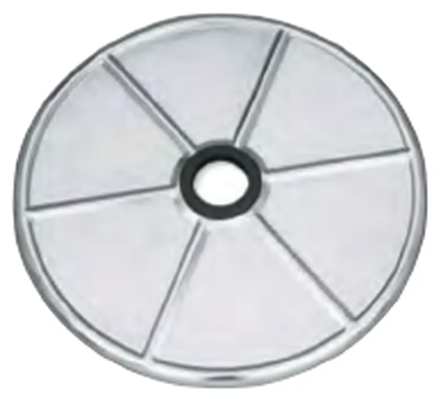

GROZ · Greasing Equipment
Follower Plates
CAT NR FLP/346 · ORD NR 44329
| CAT NR (catalogue number) | FLP/346 |
|---|---|
| ORD NR (order number) | 44329 |
| Box quantity | 50 |
| For use with GROZ pump series | GFP04 |
| Inner dia. of grommet rubber (inch) | 1-1/2 |
| Inner dia. of grommet rubber (mm) | 38 |
| Outer dia. of follower plate (inch) | 13-5/8 |
| Outer dia. of follower plate (mm) | 346 |
| Pail capacity | 120 lb. / 16 gal. / 50 kg |
| Table section | ALL STEEL FOLLOWER PLATES |
Open in the catalogue The catalogue PDF, page 123
From the GROZ Fluid Handling CC-07 catalogue. Not yet verified: these details were read from the printed catalogue automatically; check the catalogue page before ordering.